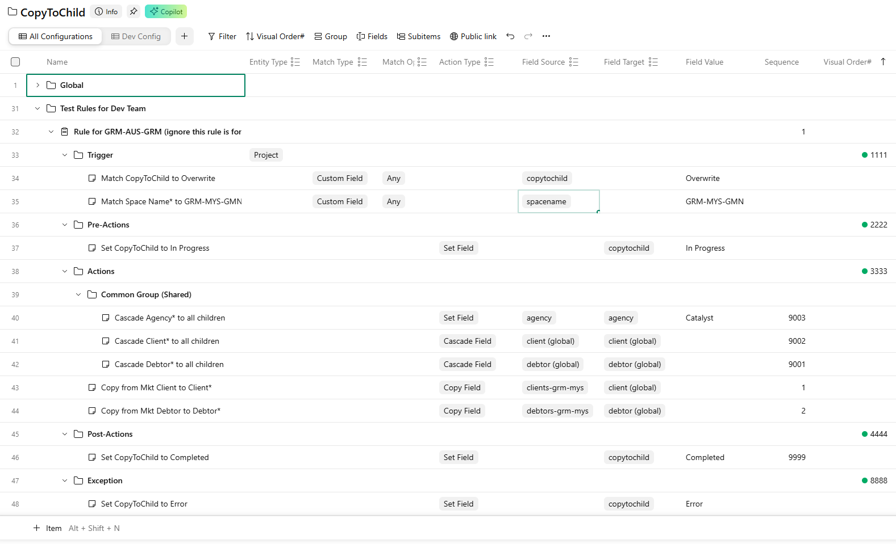

CopyToChild V2
A configurable engine for automating field-data propagation within Wrike.
Overview
CopyToChild V2 introduces significant flexibility improvements over the legacy V1 implementation. It provides a robust engine for automating field-data propagation within Wrike.
Key enhancements include:
- Configurable triggers. Define precise conditions for when the CopyToChild rule executes.
- Granular field control. Fully configurable selection of fields for copy over or cascade down operations.
Feature comparison
The following table compares the legacy and enhanced implementations.
| Feature | CopyToChild V1 (legacy) | CopyToChild V2 (enhanced) |
|---|---|---|
| Rule scope | Fixed to Space Name* (for example, GRM-SGP-GMN) |
Configurable for specific markets (for example, GRM-MKT-GMN) |
| Copy logic | Fixed set of fields (for example, Clients-GRM-SGP → Client*) |
Configurable source and target fields (for example, Clients-GRM-SGP-Gov → Client*) |
| Cascade logic | Fixed set of fields (for example, Client* → Client*) |
Configurable source and target fields for cascading |
Configuration
Rule configurations are managed directly within Wrike.
Location: CopyToChild configuration

Rule definition guide
To define a new configuration rule, follow these steps.
1Create the rule container
Create a new Project to house the rule definition. Give it a descriptive name for easy maintenance.
Required custom fields
| Custom field | Value | Notes |
|---|---|---|
Entity Type |
Project |
Currently, only Project entities are supported. |
Structure. Inside this project, create five folders:
Trigger— Contains the conditions that activate the rule.Pre-Actions— Contains the operations to perform after the trigger is met but before any main operations.Actions— Contains the main operations to perform when the trigger is met.Post-Actions— Contains the operations to perform after the Actions section completes.Exception— Contains the operations to perform if an unexpected error occurs during rule execution.
2Define triggers
Create a Task inside the Trigger folder with the following properties.
| Custom field | Value options | Description |
|---|---|---|
Match Type |
Custom Field |
The type of matching logic (currently restricted to Custom Field). |
Match Operation |
Any / All / None |
Any: Matches if the field contains any of the specified values. All: Matches if the field contains all specified values. None: Matches if the field contains none of the specified values. |
Field Source |
(Select from list) | The custom field to evaluate. |
Field Value |
For example, GRM-SGP-GMN |
The value or values to match against. |
You can add multiple trigger conditions. The rule executes only when all conditions are met.
3Define actions
Create a Task inside the Actions folder for each operation.
| Custom field | Value options | Description |
|---|---|---|
Action Type |
Copy Field / Cascade Field / Cascade Field (New Only) / Set Field |
Copy Field: Copies data from a source field to a target field on the same entity. Cascade Field: Propagates data from a source field on the parent to a target field on all children. Cascade Field (New Only): Propagates data from a source field on the parent to a target field on all children, but only on first-time propagation. Set Field: Replaces or sets the value of the target field to the specified Field Value. |
Sequence |
1, 2, … |
Determines the execution order of actions. |
Use folders to organize actions, or use cross-tagging to share common action definitions across rules.
4Define Pre-Actions, Post-Actions, and Exception
The Pre-Actions, Post-Actions, and Exception sections
are optional. Maintain them the same way as the Actions section; they are
triggered at different stages or conditions in the execution pipeline.
Testing & validation
Test environment
Rules configured here are active for Campaigns located in the CopyToChild v2 Test folder.
Sync configuration
After modifying rules in Wrike, force the service to reload the configuration:
Testing steps
- Duplicate an existing Campaign (with all custom fields but not the assignee).
- Move it to the test folder.
- Verify the results.
Ensure the test campaign does not reside in — or get cross-tagged into — any existing market space. Doing so triggers the legacy CopyToChild V1 logic, which interferes with V2 testing.
Feedback and suggestions
Please be generous with your feedback and suggestions here.